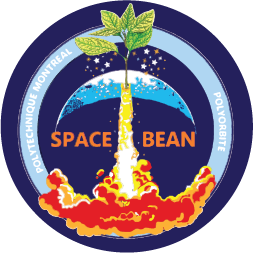

Spacebean

SpaceBean is an incubator designed to study the viability of plant growth in a microgravity environment. This project will test a new soil conditioning and provide data for a model of legumes in microgravity. It is a self-sufficient and autonomous system that will be able to determine the best conditions for the growth of the plant.